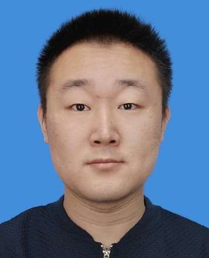
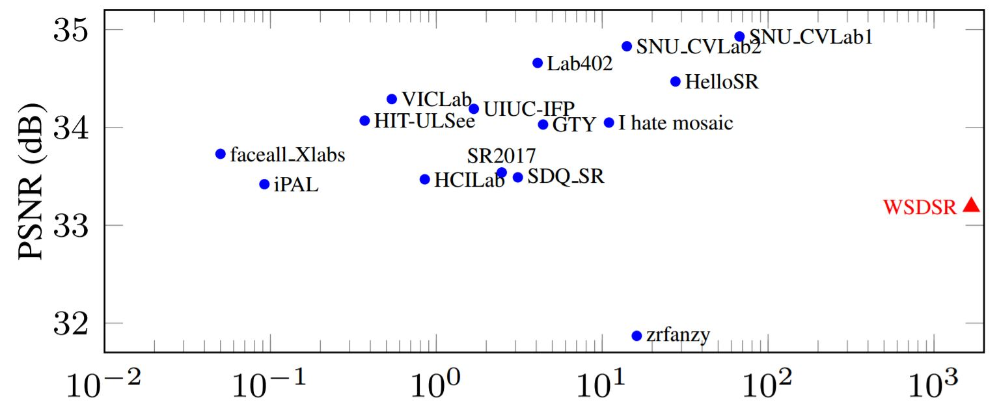
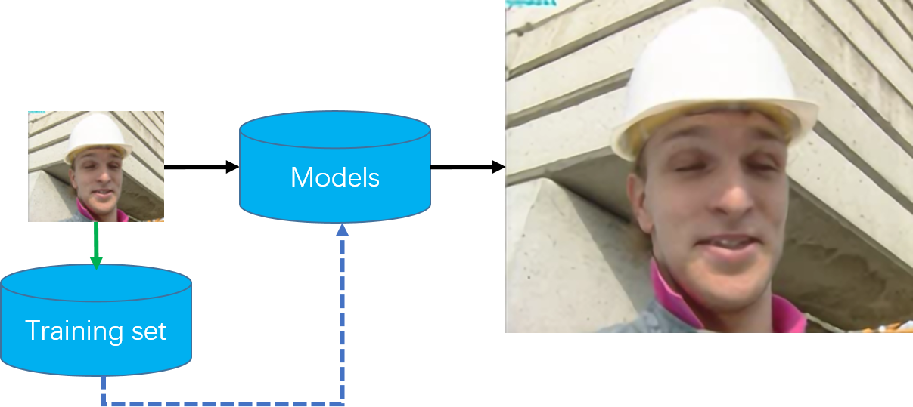
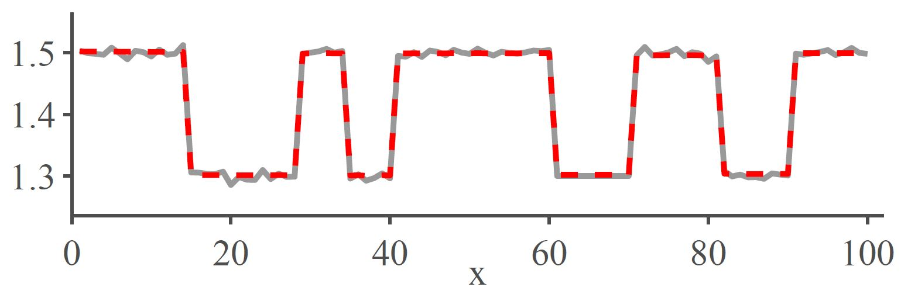

|  | Yapeng Tian Master Candidate Department of Electronic Engineering |
Short bio
I am a master candidate in the Department Of Electronic Engineering at Tsinghua University, Beijing, China. I received my B.E. degree from Xidian University. During Nov. 2016 to June 2017, I was a visiting student at Shenzhen Institutes of Advanced Technology (SIAT), Chinese Academy of Science, supervised by Prof. Yu Qiao. My research interests are low-level vision and deep learning.
News
[07/2017] I I recieve 'Excellent Graduate of Tsinghua university' award.
[05/2017] One paper have been submitted to BMVC.
[03/2017] I will join Prof. Chenliang Xu's lab to pursue a PhD degree at University of Rochester!
Publications
|  | NTIRE 2017 Challenge on Single Image Super-Resolution: Methods and Results
Radu Timofte, Eirikur Agustsson, Luc Van Gool, ..., Xintao Wang, Yapeng Tian, Ke Yu, Yulun Zhang, Shixiang Wu, Chao Dong, Liang Lin, Yu Qiao, ...
In The IEEE Conference on Computer Vision and Pattern Recognition (CVPR) Workshops, 2017. [PDF]
|
Consistent Coding Scheme for Single-Image Super-Resolution Via Independent Dictionaries
|
|  | Anchored Neighborhood Regression based Single Image Super-Resolution from Self-examples
|
|  | Single-Image Super-Resolution Using Clustering-Based Global Regression and Propagation Filtering
Wenming Yang,Yapeng Tian, Fei Zhou, Tingrong Yuan, Xuesen Shang and Qingmin Liao
ACPR 2015, [PDF]
|
Awards
- Excellent Graduate of Tsinghua University, 2017
- Excellent Master Thesis Award, Tsinghua University, 2017
- National Scholarship (Ministry of Education, China, Top 2%), 2016